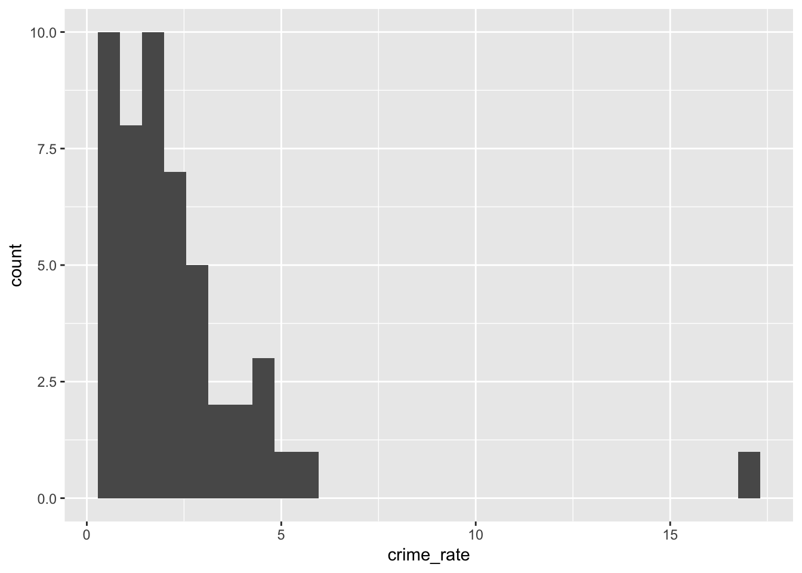
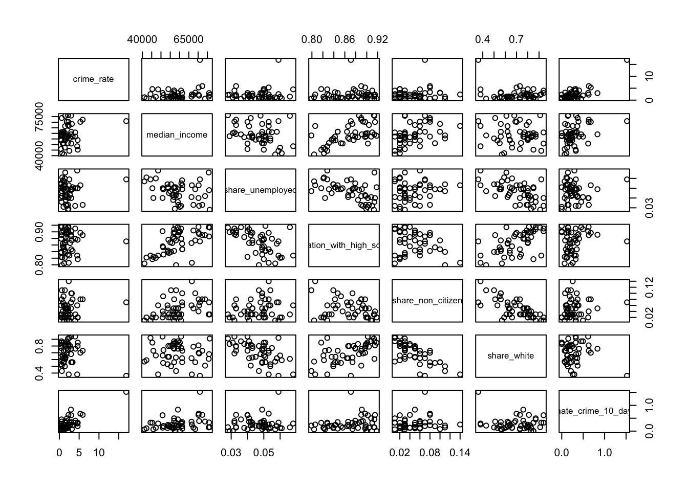

final_project
Kee-Young Shin
December 5, 2018
library(tidyverse)## -- Attaching packages ----------------------------------------------------------------------------------------------- tidyverse 1.2.1 --## v ggplot2 3.0.0 v purrr 0.2.5
## v tibble 1.4.2 v dplyr 0.7.7
## v tidyr 0.8.1 v stringr 1.3.1
## v readr 1.1.1 v forcats 0.3.0## -- Conflicts -------------------------------------------------------------------------------------------------- tidyverse_conflicts() --
## x dplyr::filter() masks stats::filter()
## x dplyr::lag() masks stats::lag()library(readxl)
=======
<<<<<<< HEAD
library(tidyverse)
library(readxl)
=======
>>>>>>> d61f846079c0daa756f77ba8a6a20dbf2e10926d
library(tidyverse)
## ── Attaching packages ───────────────────────────────────────────────────── tidyverse 1.2.1 ──
## ✔ ggplot2 3.0.0 ✔ purrr 0.2.5
## ✔ tibble 1.4.2 ✔ dplyr 0.7.8
## ✔ tidyr 0.8.1 ✔ stringr 1.3.1
## ✔ readr 1.1.1 ✔ forcats 0.3.0
## ── Conflicts ──────────────────────────────────────────────────────── tidyverse_conflicts() ──
## ✖ dplyr::filter() masks stats::filter()
## ✖ dplyr::lag() masks stats::lag()
library(readxl)
<<<<<<< HEAD
=======
>>>>>>> 935a2de3b3c56bc2f9692a14dddf1c14ffdcb514
>>>>>>> ae7b001931293ad50e40933bb0a1c8e2095c54a9
>>>>>>> d61f846079c0daa756f77ba8a6a20dbf2e10926d
=======
library(tidyverse)
library(readxl)
>>>>>>> 1f0482dc9fde08845e5a93a123b3e633541cf995
library(plotly)
import hate crime incident count from 2005 to 2017
hate_offenses_2017 = read_xls("./table-1.xls") %>%
janitor::clean_names() %>%
filter(table_1 == "Total") %>%
mutate(table_1 = str_replace(table_1, "Total", "2017"))
hate_offenses_2016 = read_xls("./2016_hatecrime.xls") %>%
janitor::clean_names() %>%
filter(table_1 == "Total") %>%
mutate(table_1 = str_replace(table_1, "Total", "2016")) %>%
select(1:5)
hate_offenses_2015 = read_xls("./2015_hatecrime.xls") %>%
janitor::clean_names() %>%
filter(table_1 == "Total") %>%
mutate(table_1 = str_replace(table_1, "Total", "2015"))
hate_offenses_2014 = read_xls("./2014_hatecrime.xls") %>%
janitor::clean_names() %>%
filter(table_1 == "Total") %>%
mutate(table_1 = str_replace(table_1, "Total", "2014")) %>%
select(1:5)
hate_offenses_2013 = read_xls("./2013_hatecrime.xls") %>%
janitor::clean_names() %>%
filter(table_1 == "Total") %>%
mutate(table_1 = str_replace(table_1, "Total", "2013")) %>%
select(1:5)
hate_offenses_2012 = read_xls("./2011_hatecrime.xls") %>%
janitor::clean_names() %>%
filter(table_1 == "Total") %>%
mutate(table_1 = str_replace(table_1, "Total", "2012"))
hate_offenses_2011 = read_xls("./2011_hatecrime.xls") %>%
janitor::clean_names() %>%
filter(table_1 == "Total") %>%
mutate(table_1 = str_replace(table_1, "Total", "2011"))
hate_offenses_2010 = read_xls("./2010_hatecrime.xls") %>%
janitor::clean_names() %>%
filter(table_1 == "Total") %>%
mutate(table_1 = str_replace(table_1, "Total", "2010"))
hate_offenses_2009 = read_xls("./2009_hatecrime.xls") %>%
janitor::clean_names() %>%
filter(table_1 == "Total") %>%
mutate(table_1 = str_replace(table_1, "Total", "2009"))
hate_offenses_2008 = read_xls("./2008_hatecrime.xls") %>%
janitor::clean_names() %>%
filter(table_1 == "Total") %>%
mutate(table_1 = str_replace(table_1, "Total", "2008"))
hate_offenses_2007 = read_xls("./2007_hatecrime.xls") %>%
janitor::clean_names() %>%
filter(table_1 == "Total") %>%
mutate(table_1 = str_replace(table_1, "Total", "2007"))
hate_offenses_2006 = read_xls("./2006_hatecrime.xls") %>%
janitor::clean_names() %>%
filter(table_1 == "Total") %>%
mutate(table_1 = str_replace(table_1, "Total", "2006"))
hate_offenses_2005 = read_xls("./2005_hatecrime.xls") %>%
janitor::clean_names() %>%
filter(table_1 == "Total") %>%
mutate(table_1 = str_replace(table_1, "Total", "2005"))
# aggregate data for all years
hatecrime_count_df = rbind(hate_offenses_2017, hate_offenses_2016, hate_offenses_2015,
hate_offenses_2014, hate_offenses_2013, hate_offenses_2012,
hate_offenses_2011, hate_offenses_2010, hate_offenses_2009,
hate_offenses_2008, hate_offenses_2007, hate_offenses_2006,
hate_offenses_2005) %>%
select(1:3)
colnames(hatecrime_count_df) = c("year", "total_incidents", "total_offenses")
plot change in number of hate crimes over time
hatecrime_count_df %>%
ggplot(aes(x = year, y = total_incidents)) + geom_line(group = 1, color = "blue")

importing hate crime and predictors dataset
# data in 2016
income = read_csv("./data/Income.csv") %>%
janitor::clean_names()
## Parsed with column specification:
## cols(
## Location = col_character(),
## `Median Annual Household Income` = col_character()
## )
unemployment = read_csv("./data/Unemployment.csv") %>%
janitor::clean_names()
## Parsed with column specification:
## cols(
## Location = col_character(),
## Unemployed = col_double()
## )
education = read_csv("./data/Educational_level.csv") %>%
janitor::clean_names()
## Parsed with column specification:
## cols(
## Location = col_character(),
## share_population_with_high_school_degree = col_double()
## )
ctizenship = read_csv("./data/Ctizenship.csv") %>%
janitor::clean_names()
## Parsed with column specification:
## cols(
## Location = col_character(),
## Citizen = col_double(),
## `Non-Citizen` = col_double(),
## Total = col_integer()
## )
race = read_csv("./data/Race.csv") %>%
janitor::clean_names()
## Parsed with column specification:
## cols(
## Location = col_character(),
## White = col_double(),
## Black = col_character(),
## Hispanic = col_double(),
## Asian = col_character(),
## `American Indian/Alaska Native` = col_character(),
## `Native Hawaiian/Other Pacific Islander` = col_character(),
## `Two Or More Races` = col_character(),
## Total = col_integer(),
## Footnotes = col_integer()
## )
vote = read_csv("./data/Vote.csv") %>%
janitor::clean_names()
## Parsed with column specification:
## cols(
## Location = col_character(),
## share_voters_voted_trump = col_character()
## )
crime_rate = read_excel("./data/2016.xls", range = cell_rows(3:53)) %>%
janitor::clean_names() %>%
filter(participating_state != "Total") %>%
select(location = participating_state, population_covered, total_number_of_incidents_reported) %>%
mutate(crime_rate = total_number_of_incidents_reported/population_covered*100000)
ctizenship =
ctizenship %>%
select(location, non_citizen)
race =
race %>%
select(location, white)
crime_rate =
crime_rate %>%
select(location, crime_rate)
merge_data =
merge(income, unemployment, by = "location") %>%
merge(., education, by = "location") %>%
merge(., ctizenship, by = "location") %>%
merge(., race, by = "location") %>%
merge(., vote, by = "location") %>%
merge(., crime_rate, by = "location") %>%
filter(location != "United States") %>%
rename(state = location, share_unemployed = unemployed, share_non_citizen = non_citizen, share_white = white)
dataset for annual report in state division
#list
df = list.files(path = "./annual")
#function
read_data = function(x){read_excel(str_c("./annual/", x), range = "A3:E53")%>%
mutate(year = x)}
#map
hate_crime = map(df, read_data)%>%
bind_rows()%>%
janitor::clean_names()%>%
select(-agencies_submitting_incident_reports, -agencies_submitting_incident_reports_2,-agencies_submitting_incident_reports_3)%>%
mutate(year = str_replace(year, ".xls", ""))%>%
select(year, everything())
#set na to 0
hate_crime[is.na(hate_crime)]=0
#complete the final dataset
hate_crime = hate_crime%>%
mutate(total_incident = total_number_of_incidents_reported + total_number_of_incidents_reported_2)%>%
select(year, state = participating_state, population = population_covered, total_incident)%>%
filter(state != "Total") %>%
mutate(annualprop = total_incident/population*100000)%>%
mutate(year = str_replace(year, ".xls", ""))
import and clean the annual data from 2005-2017
#list the files
files = as.data.frame(list.files(path = "./data_1"))
colnames(files)[1] = "file_names"
do the further cleaning of the merge data
merge_data = merge_data %>%
mutate(median_annual_household_income = str_replace(median_annual_household_income, ",", "")) %>%
mutate(median_annual_household_income = gsub("\\$", "",median_annual_household_income )) %>%
mutate(median_annual_household_income = as.numeric(median_annual_household_income)) %>%
select(state, median_income = median_annual_household_income, everything())
regression part
sum(is.na(merge_data))
## [1] 0
mle = lm(crime_rate~median_income+share_unemployed+share_population_with_high_school_degree+share_non_citizen+ share_white+ crime_rate, data = merge_data)
## Warning in model.matrix.default(mt, mf, contrasts): the response appeared
## on the right-hand side and was dropped
## Warning in model.matrix.default(mt, mf, contrasts): problem with term 6 in
## model.matrix: no columns are assigned
summary(mle)
##
## Call:
## lm(formula = crime_rate ~ median_income + share_unemployed +
## share_population_with_high_school_degree + share_non_citizen +
## share_white + crime_rate, data = merge_data)
##
## Residuals:
## Min 1Q Median 3Q Max
## -4.2784 -1.2477 -0.4031 0.7281 11.7359
##
## Coefficients:
## Estimate Std. Error t value
## (Intercept) -9.757e+00 1.598e+01 -0.611
## median_income 7.644e-05 7.327e-05 1.043
## share_unemployed 4.933e+01 5.222e+01 0.945
## share_population_with_high_school_degree 1.050e+01 2.125e+01 0.494
## share_non_citizen -1.414e+01 2.093e+01 -0.676
## share_white -4.416e+00 4.824e+00 -0.915
## Pr(>|t|)
## (Intercept) 0.545
## median_income 0.303
## share_unemployed 0.350
## share_population_with_high_school_degree 0.624
## share_non_citizen 0.503
## share_white 0.365
##
## Residual standard error: 2.465 on 43 degrees of freedom
## Multiple R-squared: 0.1394, Adjusted R-squared: 0.03936
## F-statistic: 1.393 on 5 and 43 DF, p-value: 0.2459
multi.fit = step(mle, direction = 'backward')
## Start: AIC=94
## crime_rate ~ median_income + share_unemployed + share_population_with_high_school_degree +
## share_non_citizen + share_white + crime_rate
## Warning in model.matrix.default(object, data = structure(list(crime_rate =
## c(1.3808898651561, : the response appeared on the right-hand side and was
## dropped
## Warning in model.matrix.default(object, data = structure(list(crime_rate
## = c(1.3808898651561, : problem with term 6 in model.matrix: no columns are
## assigned
##
## Step: AIC=94
## crime_rate ~ median_income + share_unemployed + share_population_with_high_school_degree +
## share_non_citizen + share_white
##
## Df Sum of Sq RSS AIC
## - share_population_with_high_school_degree 1 1.4839 262.66 92.273
## - share_non_citizen 1 2.7738 263.95 92.513
## - share_white 1 5.0901 266.27 92.942
## - share_unemployed 1 5.4210 266.60 93.002
## - median_income 1 6.6106 267.79 93.221
## <none> 261.18 93.996
##
## Step: AIC=92.27
## crime_rate ~ median_income + share_unemployed + share_non_citizen +
## share_white
##
## Df Sum of Sq RSS AIC
## - share_white 1 3.8270 266.49 90.982
## - share_non_citizen 1 4.4476 267.11 91.096
## - share_unemployed 1 4.6526 267.31 91.134
## <none> 262.66 92.273
## - median_income 1 28.9317 291.59 95.394
##
## Step: AIC=90.98
## crime_rate ~ median_income + share_unemployed + share_non_citizen
##
## Df Sum of Sq RSS AIC
## - share_non_citizen 1 0.9663 267.46 89.160
## <none> 266.49 90.982
## - share_unemployed 1 17.9287 284.42 92.173
## - median_income 1 27.1547 293.64 93.737
##
## Step: AIC=89.16
## crime_rate ~ median_income + share_unemployed
##
## Df Sum of Sq RSS AIC
## <none> 267.46 89.160
## - share_unemployed 1 17.140 284.60 90.203
## - median_income 1 29.397 296.85 92.269
summary(multi.fit)
##
## Call:
## lm(formula = crime_rate ~ median_income + share_unemployed, data = merge_data)
##
## Residuals:
## Min 1Q Median 3Q Max
## -3.6887 -1.1373 -0.4420 0.6579 12.5892
##
## Coefficients:
## Estimate Std. Error t value Pr(>|t|)
## (Intercept) -5.985e+00 3.393e+00 -1.764 0.0844 .
## median_income 9.098e-05 4.046e-05 2.249 0.0294 *
## share_unemployed 6.475e+01 3.771e+01 1.717 0.0927 .
## ---
## Signif. codes: 0 '***' 0.001 '**' 0.01 '*' 0.05 '.' 0.1 ' ' 1
##
## Residual standard error: 2.411 on 46 degrees of freedom
## Multiple R-squared: 0.1187, Adjusted R-squared: 0.08043
## F-statistic: 3.099 on 2 and 46 DF, p-value: 0.05462
# see distribution of crime rate
merge_data %>%
ggplot(aes(x = crime_rate)) + geom_histogram()
## `stat_bin()` using `bins = 30`. Pick better value with `binwidth`.

# transform crime rate variable
merge_data_log = merge_data %>%
mutate(crime_rate = log(crime_rate))
mle_log = lm(crime_rate~median_income+share_unemployed+share_population_with_high_school_degree+share_non_citizen+ share_white+ crime_rate, data = merge_data_log)
## Warning in model.matrix.default(mt, mf, contrasts): the response appeared
## on the right-hand side and was dropped
## Warning in model.matrix.default(mt, mf, contrasts): problem with term 6 in
## model.matrix: no columns are assigned
summary(step(mle_log, direction = "both"))
## Start: AIC=-19.25
## crime_rate ~ median_income + share_unemployed + share_population_with_high_school_degree +
## share_non_citizen + share_white + crime_rate
## Warning in model.matrix.default(object, data = structure(list(crime_rate =
## c(0.322728121178959, : the response appeared on the right-hand side and was
## dropped
## Warning in model.matrix.default(object, data = structure(list(crime_rate =
## c(0.322728121178959, : problem with term 6 in model.matrix: no columns are
## assigned
##
## Step: AIC=-19.25
## crime_rate ~ median_income + share_unemployed + share_population_with_high_school_degree +
## share_non_citizen + share_white
## Warning in model.matrix.default(Terms, m, contrasts.arg =
## object$contrasts): the response appeared on the right-hand side and was
## dropped
## Warning in model.matrix.default(Terms, m, contrasts.arg =
## object$contrasts): problem with term 6 in model.matrix: no columns are
## assigned
## Df Sum of Sq RSS AIC
## - share_population_with_high_school_degree 1 0.09028 25.985 -21.081
## - median_income 1 0.38149 26.276 -20.535
## - share_non_citizen 1 0.39604 26.290 -20.508
## - share_white 1 0.65766 26.552 -20.023
## <none> 25.894 -19.252
## - share_unemployed 1 1.39731 27.292 -18.677
##
## Step: AIC=-21.08
## crime_rate ~ median_income + share_unemployed + share_non_citizen +
## share_white
## Warning in model.matrix.default(Terms, m, contrasts.arg =
## object$contrasts): the response appeared on the right-hand side and was
## dropped
## Warning in model.matrix.default(Terms, m, contrasts.arg =
## object$contrasts): problem with term 6 in model.matrix: no columns are
## assigned
## Df Sum of Sq RSS AIC
## - share_non_citizen 1 0.32099 26.306 -22.480
## - share_white 1 0.94874 26.933 -21.324
## <none> 25.985 -21.081
## - share_unemployed 1 1.31849 27.303 -20.656
## - median_income 1 1.69336 27.678 -19.988
## + share_population_with_high_school_degree 1 0.09028 25.894 -19.252
##
## Step: AIC=-22.48
## crime_rate ~ median_income + share_unemployed + share_white
## Warning in model.matrix.default(Terms, m, contrasts.arg =
## object$contrasts): the response appeared on the right-hand side and was
## dropped
## Warning in model.matrix.default(Terms, m, contrasts.arg =
## object$contrasts): problem with term 6 in model.matrix: no columns are
## assigned
## Df Sum of Sq RSS AIC
## - share_white 1 0.68044 26.986 -23.228
## - share_unemployed 1 1.06356 27.369 -22.538
## <none> 26.306 -22.480
## + share_non_citizen 1 0.32099 25.985 -21.081
## + share_population_with_high_school_degree 1 0.01523 26.290 -20.508
## - median_income 1 2.77954 29.085 -19.558
##
## Step: AIC=-23.23
## crime_rate ~ median_income + share_unemployed
## Warning in model.matrix.default(Terms, m, contrasts.arg =
## object$contrasts): the response appeared on the right-hand side and was
## dropped
## Warning in model.matrix.default(Terms, m, contrasts.arg =
## object$contrasts): problem with term 6 in model.matrix: no columns are
## assigned
## Df Sum of Sq RSS AIC
## - share_unemployed 1 0.43557 27.422 -24.444
## <none> 26.986 -23.228
## + share_white 1 0.68044 26.306 -22.480
## + share_population_with_high_school_degree 1 0.39111 26.595 -21.944
## - median_income 1 2.19357 29.180 -21.399
## + share_non_citizen 1 0.05269 26.933 -21.324
##
## Step: AIC=-24.44
## crime_rate ~ median_income
## Warning in model.matrix.default(Terms, m, contrasts.arg =
## object$contrasts): the response appeared on the right-hand side and was
## dropped
## Warning in model.matrix.default(Terms, m, contrasts.arg =
## object$contrasts): problem with term 6 in model.matrix: no columns are
## assigned
## Df Sum of Sq RSS AIC
## <none> 27.422 -24.444
## - median_income 1 1.80137 29.223 -23.326
## + share_unemployed 1 0.43557 26.986 -23.228
## + share_white 1 0.05244 27.369 -22.538
## + share_population_with_high_school_degree 1 0.03897 27.383 -22.514
## + share_non_citizen 1 0.00000 27.422 -22.444
##
## Call:
## lm(formula = crime_rate ~ median_income, data = merge_data_log)
##
## Residuals:
## Min 1Q Median 3Q Max
## -1.36159 -0.51441 0.00213 0.50080 2.01031
##
## Coefficients:
## Estimate Std. Error t value Pr(>|t|)
## (Intercept) -7.028e-01 7.260e-01 -0.968 0.3380
## median_income 2.140e-05 1.218e-05 1.757 0.0854 .
## ---
## Signif. codes: 0 '***' 0.001 '**' 0.01 '*' 0.05 '.' 0.1 ' ' 1
##
## Residual standard error: 0.7638 on 47 degrees of freedom
## Multiple R-squared: 0.06164, Adjusted R-squared: 0.04168
## F-statistic: 3.088 on 1 and 47 DF, p-value: 0.08541
see correlation between variables
merge_data %>%
select(-state, -share_voters_voted_trump) %>%
select(crime_rate, everything()) %>%
pairs()

see distribution of hate crime rate
ggplot(merge_data, aes(x = crime_rate)) +
geom_density(alpha = .4, adjust = .5, color = "blue")

Building the Map of hate crime rate based on 2016
map_data_2016 = merge_data %>%
mutate(#hate_crimes_per_100k_splc = as.numeric(hate_crimes_per_100k_splc),
#median_household_income = as.numeric(median_household_income),
state = as.factor(state),
code = state.abb[state],
hover = with(merge_data, paste(state,'<br>' ,"share for trump",share_voters_voted_trump))
) %>%
select(code, crime_rate, hover )
l <- list(color = toRGB("white"), width = 2)
g <- list(
scope = 'usa',
projection = list(type = 'albers usa'),
showlakes = TRUE,
lakecolor = toRGB('white')
)
plot_geo(map_data_2016, locationmode = 'USA-states') %>%
add_trace(
z = ~ crime_rate, text = ~hover, locations = ~code,
color = ~ crime_rate, colors = 'Reds'
) %>%
colorbar(title = "Hate crime rate ") %>%
layout(
title = 'Hate crime rate in 2016 all over U.S. ',
geo = g
)
<<<<<<< HEAD
<<<<<<< HEAD
=======
<<<<<<< HEAD
=======
<<<<<<< HEAD